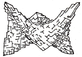
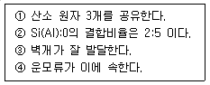
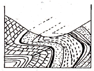
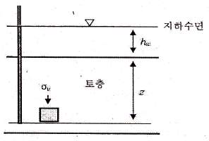
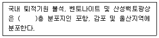

응용지질기사 (2013-08-18 기출문제)
1과목: 암석학 및 광물학
1. 퇴적암에 발달한 사층리로서 판단할 수 없는 것은?
- 퇴적물의 공급원을 알 수 있다.
- 지층이 퇴적할 당시의 유수의 방향을 알 수 있다.
- 퇴적물의 근원암을 판단할 수 있다.
- 지층의 역전 여부를 판단할 수 있다.
(정답률: 83%)

2. 다음 중 현무암질 암석이 높은 온도와 압력의 영향을 받아 생성되는 변성암은?
- 각섬암
- 감람암
- 천매암
- 압쇄암
(정답률: 45%)
3. 다음 중 가장 높은 압력에서 생성되는 변성상은?
- 녹색편암상
- 애클로자이트상
- 각섬석상
- 혼펠스상
(정답률: 68%)
4. 중성 심성암으로서 사장석의 함유량이 알칼리 장석의 양보다 훨씬 많은 암석은?
- 섬장암
- 조면암
- 유문암
- 섬록암
(정답률: 64%)
5. 접촉변성작용을 받아 혼펠스(hornfels)로 쉽게 변하는 암석은?
- 역암
- 사암
- 셰일
- 석회암
(정답률: 91%)
6. 현무암에 관한 설명 중 옳은 것은?
- 마그마가 지하에서 서서히 식으면서 만들어지는 암석이다.
- 주로 고철질(mafic) 광물로 구성된 암석이다.
- 대륙지각을 구성하고 있는 대표적인 암석이다.
- 주구성광물이 운모-장석-석영이다.
(정답률: 86%)
7. 그레이와케(graywacke)의 특성이 아닌 것은?
- 암편, 장석, 유색광물과 같은 불안정한 성분을 다량 포함한다.
- 암회색을 띠며, 분급도가 낮다.
- 점토질 기질을 소량(5% 미만) 포함한다.
- 입자의 원마도가 낮다.
(정답률: 69%)
8. 판상 구조를 보이는 주위 암석 속에 평행하게 관입한 판상의 화성암체는?
- 암상(sill)
- 암경(neck)
- 암주(stock)
- 저반(batholith)
(정답률: 75%)
9. 오피올라이트(ophiolite)와 가장 관련이 깊은 것은?
- 칼크알칼리 안산암
- 쳐트나 원양성 퇴적암
- 화성탄산염암
- 구과상 화강암
(정답률: 71%)
10. 한 점을 중심으로 광물질이 방사상으로 자란 구형의 알갱이가 많이 들어 있는 화산암의 구조를 무엇이라 하는가?
- 구상구조
- 호상구조
- 행인상구조
- 구과상구조
(정답률: 82%)
11. 다음 중 동일한 결정구조를 가진 광물들의 성질에 대한 설명으로 옳지 않은 것은?
- 구성원자의 크기가 클수록 경도가 높다.
- 구성원자의 원자량이 클수록 비중이 크다.
- 구성원자의 비중이 클수록 경도가 높다.
- 구성원자의 크기가 클수록 단위포의 크기가 크다.
(정답률: 50%)
12. 중광물(heavy mineral)을 분리하는데 가장 많이 사용되는 광물의 분리법은?
- 자력분리법
- 정전분리법
- 비중분리법
- 부유선광법
(정답률: 79%)
13. 단파장 자외선 하에서 청백색 형광을 발하는 광물은?
- 회중석
- 형석
- 사파이어
- 알렉산드라이트
(정답률: 74%)
14. 광물이 불규칙하게 성장하면 독특한 결정의 형태가 만들어진다. 아래 그림은 돌로마이트의 결정을 스케치한 것이다. 어떤 형태를 보여주는가?

- 누대상 결정
- 만곡 결정
- 수지상 결정
- 해정
(정답률: 74%)
15. 다음 중 교대작용에 의해 생성된 가상(pseudomorph)에 해당하지 않는 것은?
- 남동석 → 공작석
- 황철석 → 침철석
- 단사황 → 사방황
- 방해석 → 석영
(정답률: 59%)
16. 다음과 같은 조건을 갖는 규산염 광물의 결합구조는?

- 단쇄상 구조
- 복쇄상 구조
- 3차원 망상 구조
- 층상 구조
(정답률: 79%)
17. 8면체상 배위다면체의 경우, 양이온 주위를 둘러싸고 있는 음이온의 수는?
- 4
- 6
- 8
- 12
(정답률: 77%)
18. 광물의 화학결합과 그에 해당하는 광물의 연결로 옳은 것은?
- 이온결합 - 암염
- 금속결합 - 백운모
- 공유결합 - 형석
- 잔류결합 - 금강석
(정답률: 86%)
19. 어떤 광물의 분석결과(중량%) Na 32.8%, Al 12.8%, F 54.4% 로 나왔다. 이 광물의 화학식으로 옳은 것은? (단, 각 원소의 원자량은 Na = 23, Al = 27, F = 19)
- NaAlF6
- Na3AlF6
- NaAl2F3
- Na3Al2F3
(정답률: 69%)
20. 대칭축은 회전각도에 따라 360도 회전하는 동안 동일한 모양이 반복되는 횟수만큼의 수로 표기한다. 다음 중 실제 존재하지 않는 대칭축은?
- 1회 대칭축
- 2회 대칭축
- 4회 대칭축
- 5회 대칭축
(정답률: 81%)
2과목: 구조지질학
21. 다음 중 대륙지각의 분류라 할 수 없는 것은?
- 순상지(shield)
- 대지(platform)
- 오피(ophiolite)
- 현생누대 조산대
(정답률: 75%)
22. 홍해(Red Sea)가 해당되는 대륙 경계의 유형은?
- 발산형 대륙 경계
- 섭입형 대륙 경계
- 변환단층형의 경계
- 충돌형 대륙 경계
(정답률: 79%)
23. 절대연대측정법 중 충적세에 발생한 단층운동의 최후 운동시기를 한정하는데 가장 적당한 것은?
- 우라늄-납 방법
- 탄소 동위원소 방법
- 칼륨-아르곤 방법
- 루비듐-스트론튬 방법
(정답률: 64%)
24. 충상단층계(thrust system)에서 창문(window)에 대한 설명으로 옳지 않은 것은?
- 저각의 역단층이 발달하는 곳에 나타난다.
- 상대적으로 오래된 암체에 의해 둘러싸여 있다.
- 창문내에 분포하는 암석은 이동량이 없다.
- 미고결 퇴적물에 잘 나타난다.
(정답률: 70%)
25. 절리의 방향성 등의 해석에 사용하는 다이어그램(diagram)이 아닌 것은?
- 극점(Pole) 다이어그램
- 장미(Rose) 다이어그램
- 베타(Beta) 다이어그램
- 극점-밀도(Pole-density) 다이어그램
(정답률: 74%)
26. 모어응력원(Mohr stress circle)에서 응력원의 반경은 무엇을 의미하는가?
- 평균응력(mean stress)
- 축응력(axial stress)
- 차응력(differential stress)
- 편차응력(deviatoric stress)
(정답률: 47%)
27. 우리나라의 중생대 조산운동과 관련이 깊은 것은?
- 대보화강암의 관입
- 경상누층군의 퇴적
- 제주도의 형성
- 평안누층군의 퇴적
(정답률: 66%)
28. 다음의 지진들 중 판구조론적으로 나머지와 다른 하나는?
- 일본의 도쿄지진(1923년, 규모 7.9)
- 대만의 치치지진(1999년, 규모 7.6)
- 일본의 고베지진(1995년, 규모 6.9)
- 미국의 샌프란시스코지진(1906년, 규모 8.3)
(정답률: 90%)
29. 다음 중 판구조론(plate tectonics)을 뒷받침하는 증거가 아닌 것은?
- 운석의 충돌과 공룡의 멸종
- 고지자기와 지열류량
- 지향사와 습곡산맥
- 해저지형과 대륙붕
(정답률: 85%)
30. 인도대륙과 유라시아대륙의 충돌 이전 이 두 대륙 사이에 있던 해양은?
- 고태평양해(Paleo-Pacific Sea)
- 애틀란티스해(Atlantis Sea)
- 테티스해(Tethys Sea)
- 고인도양해(Paleo-Indian Sea)
(정답률: 60%)
31. 판구조론에서 판의 경계 중 수렴경계에서의 특징으로 볼 수 없는 것은?
- 심한 화산활동
- 심한 지진활동
- 심한 변환단층의 생성
- 심한 판의 충돌
(정답률: 82%)
32. 일반적으로 지각의 10km 상부에서는 취성 변형이, 10km 하부에서는 연성 변형이 발생한다고 한다. 10km 심도의 대륙지각의 하중에 의한 수직응력은 얼마인가? (단, 화강암질암의 밀도는 2700kg/m3, 중력가속도는 10m/s2이다.)
- 100MPa
- 270MPa
- 500MPa
- 750MPa
(정답률: 83%)
33. 우리나라의 지층명과 지질시대가 잘못 연결된 것은?
- 풍촌층 - 고생대 캠브리아기
- 연일층군 - 신생대 제3기
- 신동층군 - 중생대 백악기
- 만항층 - 고생대 오오도비스기
(정답률: 40%)
34. 다음 중 지구내부의 구조에 대한 설명으로 옳지 않은 것은?
- 맨틀은 지구 전체의 82%에 달하는 체적을 차지하며, 고체이고 약 2900km 깊이까지 분포한다.
- 암석권은 지각 전체와 맨틀의 최상부로 구성된다.
- 지각은 대륙지각과 해양지각으로 구성되며 대률지각의 암석은 해양지각의 암석에 비해 평균 밀도가 높다.
- 핵은 대부분 철-니켈 합금으로 이루어져 있다.
(정답률: 75%)
35. 다음 그림은 석탄광의 지질 단면도이다. 다음 중 어느 습곡과 관계가 있는가?

- 경사습곡(Inclined fold)
- 침강습곡(Plunging fold)
- 수직습곡(Vertical fold)
- 향심습곡(Centroclinal fold)
(정답률: 66%)
36. 어느 지역의 지질조사를 실시하는 중에 두 지층 사이의 부정합 관계를 알아내려고 한다. 다음 조사사항 중 가장 거리가 먼 것은?
- 두 지층 사이에서 기저역암을 찾으려고 한다.
- 두 지층을 구성하는 입자의 크기를 분석하여 비교한다.
- 두 지층 속에 들어있는 화석을 조사하여 비교한다.
- 두 지층의 주향과 경사를 면밀히 측정하여 비교한다.
(정답률: 79%)
37. 단층비탈향사(fault-ramp syncline), 단층굴곡배사(fault-anticline), 회전배사(roll-over anticline) 등의 지질구조가 형성되는 곳은?
- 정단층계
- 스러스트단층계
- 주향이동단층계
- 변환단층계
(정답률: 60%)
38. 하도의 폭이 20m, 평균수심이 5m이고 평균유속이 3m/s이다. 이 하천의 유량은 얼마인가?
- 180m3/min
- 18000m3/min
- 300m3/min
- 30000m3/min
(정답률: 61%)
39. 점완단층(listric fault)에 대한 설명으로 옳은 것은?
- 지하로 내려가도 단층면의 경사가 크게 변하지 않는다.
- 인장력 또는 압축력에 의하여 발생한다.
- 단층 상 · 하반의 퇴적층의 두께가 다른 단층이다.
- 점완단층은 고기의 지층을 신기의 지층 위로 올려놓는다.
(정답률: 67%)
40. 다음 중 카르스트 지형과 가장 관련이 없는 지역은?
- 단양
- 춘천
- 영월
- 제천
(정답률: 74%)
3과목: 탐사공학
41. 반사법 탄성파 탐사에서 사용되는 공심점 기법(Common Depth Point method)에 대한 설명으로 옳은 것은?
- 발파점-수진점 간격을 달리하여 동일한 반사점으로부터 여러 개의 트레이스를 기록하는 것이다.
- 수진점에 기록된 반사파 기록을 굴절파 기록으로 바꾸는 것이다.
- 지층의 두께를 동일하다고 가정하는 해석기법이다.
- 육상 탄성파 탐사에서 사용되며, 해상에서는 적용할 수 없다.
(정답률: 83%)
42. 토양층 중 B층에 대한 설명으로 옳지 않은 것은?
- 기후와 식생의 영향을 직접 받는 층으로 상부에 유기물층이 존재한다.
- 주로 철산화물이나 점토광물이 집적된 층이다.
- 미량원소들이 농축되는 경우가 많으므로 지구화학탐사의 대상층이 된다.
- 적갈색, 황갈색, 암회색 등의 색을 띤다.
(정답률: 85%)
43. 중력탐사자료의 처리와 관련하여 광역 이상이 우세한 지역에서 소규모 이상을 효과적으로 추출하고자 할 때 적당한 방법은?
- 상향연속법
- 이동평균법
- 장파장 통과 필터링
- 2차미분법
(정답률: 61%)
44. 쌍극자배열을 이용한 전기비저항 탐사에서 전류 1000[mA]를 흘려 500[mV]의 전위차가 측정되었다. 전류전극 사이와 전위전극 사이의 간격은 각각 3m이고, 전류전극과 전위전극 사이의 거리는 9m 일 때 겉보기 비저항은?
- 35.4Ωm
- 92.1Ωm
- 141.3Ωm
- 282.7Ωm
(정답률: 46%)
45. 다음 중 탄성파의 특성에 대한 설명으로 옳지 않은 것은?
- 종(P)파는 입자의 진동과 파동의 전파방향이 서로 평행하다.
- 레일리(Rayleigh)파는 입자의 진동과 파동의 전파방향이 같은 방향으로 운동한다.
- 스톤리(Stoneley)파는 고체와 액체의 경계면에서 발생한다.
- 횡(S)파는 파동의 운동방향에 따라 SV파와 SH파가 있다.
(정답률: 86%)
46. 다음 중 지열탐사법에 대한 설명으로 옳지 않은 것은?
- MT 법은 용암 또는 거의 용암 상태의 암석의 전기 비저항이 비정상적으로 매우 낮다는 점을 탐상의 지침으로 사용한다.
- Curie 점법은 암석이 수백도의 온도에 이르면 잃었던 자성을 회복하는 성질을 이용하여 저온암체의 부존을 확인하는 방법이다.
- P파 지연법이란 매우 뜨거운 암체가 부존하는 경우 P파는 속도가 감소하여 현상을 탐지하는 방법이다.
- 지열탐사는 지각내의 용암의 부존에 기인하는 물리적 성질들의 변화에 의하여 지열광상의 부존을 확인하는 방법이다.
(정답률: 59%)
47. 전기탐사법 중 분산상의 황화광상 탐사에 가장 적합한 방법은?
- 지전류법
- 전기비저항법
- 인공분극법
- 유도분극법
(정답률: 57%)
48. 같은 암석일지라도 지질학적 조건에 따라서 암석이나 퇴적물에서의 탄성파의 속도가 달라지지만 몇 가지의 대략적인 법칙이 성립한다. 다음 설명 중 옳지 않은 것은?
- 포화된 퇴적물은 불포화된 퇴적물보다 속도가 느리다.
- 미고결 퇴적물은 고결 퇴적물보다 속도가 느리다.
- 파쇄된 암석은 파쇄되지 않은 암석보다 속도가 느리다.
- 풍화된 암석은 풍화되지 않은 암석보다 속도가 느리다.
(정답률: 87%)
49. 탄성파 탐사의 자료처리 과정 중 뮤팅(Muting)에 대한 설명으로 옳은 것은?
- 시간별로 수록된 탐사 자료를 개개의 채널별로 순서적으로 재정리하여 연속적인 트레이스로 바꾸어주는 작업
- 탄성파 단면상에 나타난 반사점이나 회절점들을 본래의 위치에 나타나도록 처리하는 작업
- 반사법 탄성파 탐사에 있어서 초기반사파가 도달하기 전에 먼저 도달하는 진폭이 큰 직접파를 제거하는 작업
- 반사법 탄성파 탐사 자료처리시 자료의 질을 떨어뜨릴 수 있는 나쁜 트레이스들을 솎아내는 작업
(정답률: 71%)
50. 다음 중 친철원소에 해당하는 것은? (단, Goldschmidt의 분류에 의함)
- 아연
- 니켈
- 텅스텐
- 리튬
(정답률: 68%)
51. 굴절법 탄성파탐사를 적용하는데 있어 기본 전제 조건으로 옳지 않은 것은?
- 각 지층의 두께는 입사되는 탄성파 에너지의 파장보다 커야 한다.
- 탄성파 전파속도는 심도가 깊어짐에 따라 감소해야 한다.
- 파의 경로는 측선이 포함된 수직면에 국한되어 파의 측면전파 현상이 전혀 없다고 가정한다.
- 하부층의 두께는 상부층의 두께와 같거나 그 이상이 되어야 한다.
(정답률: 47%)
52. 상대유전율이 4인 석탄층 아래에 상대유전율이 9인 석회암층이 있다. 지하투과 레이다탐사에서 전자기파가 수직입사를 하였다면 반사계수는 얼마인가?
- 0.2
- -0.2
- 0.38
- -0.38
(정답률: 63%)
53. 다음 중 방사능 탐사에서 주로 이용되는 암석 내의 방사능 물질이 아닌 것은?
- K40
- TI
- TH
- U
(정답률: 76%)
54. 다음 중 시추공 텔레뷰어(borehole televiewer)에 대한 설명으로 옳은 것은?
- 신호원으로 초음파를 사용하며 반사파의 진폭 및 주시를 측정한다.
- 카메라처럼 시추공벽의 디지털 화상자료(image)를 제공 한다.
- 시추공벽 주변의 공극율을 직접적으로 측정할 수 있다.
- 실제 암석의 색을 볼 수 있어 암종의 구분이 가능하다.
(정답률: 40%)
55. 다음 중 전기비저항 검층법에 해당하지 않는 것은?
- 노말 검층
- 래터럴 검층
- 음파 검층
- 전자유도 검층
(정답률: 84%)
56. 지하에 전도성 이상체가 존재할 경우 지하매질을 전파하는 전자기파의 자기장에 의해 이상체 내에 발생되는 전류는?
- 지전류(telluric current)
- 직류전류(direct current)
- 유도전류(eddy current)
- 교류전류(alternative current)
(정답률: 70%)
57. 탄성파 전파속도가 1000m/s이고 두께가 10m인 지표층 하부에 탄성파 전파속도가 2000m/s인 기반암이 놓여 있는 수평 2층 구조에서 굴절법·탄성파 탐사를 실시하였다. 발파점에서 100m 떨어진 수진점에서의 굴절파의 초동(first arrival)이 걸린 시간은 얼마인가? (단, ms는 millisecond로 1/1000초 이다.)
- 67.32ms
- 55.46ms
- 42.33ms
- 26.55ms
(정답률: 50%)
58. 다음 중 자연잔류자화의 종류에 대한 설명으로 옳지 않은 것은?
- 등온 잔류자화는 일정한 온도하에서 짧은 시간동안만 존재하고 사라지는 외부자기장에 의해 발생한다.
- 열 잔류자화는 자성물질이 높은 온도로부터 큐리 온도를 거쳐 서서히 식어갈 때 외부 자기장에 의해 발생한다.
- 화학 잔류자화는 콜로이드 상태의 세립질 물질이 퇴적되면서 발생한다.
- 점성 잔류자화는 암석이 약한 외부자기장을 오랫동안 받아서 발생한다.
(정답률: 72%)
59. 중력탐사 자료의 보정 중 해머 도포(Hammer's chart)를 이용하여 수행할 수 있는 것은?
- 고도(elevation) 보정
- 조석(earth-tide) 보정
- 위도(latitude) 보정
- 지형(terrain) 보정
(정답률: 80%)
60. 다음 중 지하투과 레이다탐사법(GPR)에 대한 설명으로 옳지 않은 것은?
- 고해상도의 물리탐사방법이다.
- 가탐심도가 작으므로 주로 천부조사에 적용된다.
- 수 십 Hz 이항의 주파수를 사용한다.
- 일반적으로 반사법이 가장 널리 사용된다.
(정답률: 63%)
4과목: 지질공학
61. 암반사면에 있어서 불연속면에 대한 해석은 사면의 안전성을 위해 매우 중요하다. 다음 중 불연속면에 대한 설명으로 옳지 않은 것은?
- 암반 내에 존재하는 역학적 분리면 또는 인장강도가 거의 없는 깨진면을 불연속면이라 한다.
- 사면의 불안정 요인은 단층, 절리, 층리 및 암맥과 같은 불연속면의 기하학적 및 역학적 특성에 기인한다.
- 전단변위가 없는 미소한 균열이나 단열을 단층이라 한다.
- 기존 암석의 틈을 따라 관입한 판상의 화성암체를 암맥이라 한다.
(정답률: 78%)
62. 지표 근처에 연약 점토층이 부분적으로 분포되어 있는 경우 적용할 수 있는 지반개량공법으로 가장 적당한 것은?
- 바이브로플로테이션공법
- 지하수위저하공법
- 굴착치환공법
- 동압밀공법
(정답률: 59%)
63. 화강암에서 기계적 풍화가 발생하기 위한 조건으로 가장 적당하지 않은 것은?
- 겨울에 온도가 영하로 떨어진다.
- 밤, 낮의 온도차가 크다.
- 비가 자주 내린다.
- 응력해방에 따라 절리 발달이 촉진된다.
(정답률: 69%)
64. 점토층에서 실시된 표준관입시험 결과 얻어진 N값이 16일 때 이 점토층의 추정 일축압축강도는 얼마인가?
- 1.0kg/cm2
- 1.5kg/cm2
- 2.0kg/cm2
- 2.5kg/cm2
(정답률: 53%)
65. 암반분류법인 Q-system에 대한 설명으로 옳지 않은 것은?
- 터널지보의 설계를 용이하게 해주는 공학적인 분류체계이다.
- 블록간의 전단강도에 대해서는 고려하지 않는다.
- Q-system은 각 요소의 최소, 최대 값을 조합했을 때 0.001~1000 사이의 값을 갖는다.
- Q값을 나타내는 식 중 RQD/Jn 항은 암반구조를 나타내며, 불연속면에 의해 형성되는 블록크기에 대한 대략적인 척도이다.
(정답률: 52%)
66. 흙의 통일분류법에서 소성이 낮은 유기질 실트 또는 유기질 실트 점토를 나타내는 기호는?
- OL
- CL
- ML
- Pt
(정답률: 76%)
67. 포화대의 저유특성을 결정하는 요인이 아닌 것은?
- 공극율
- 비산출율
- 비저유계수
- 수리전도도
(정답률: 73%)
68. 흙의 투수계수에 영향을 미치는 요소에 대한 설명으로 옳지 않은 것은?
- 흙 입자의 크기가 클수록 투수계수는 증가한다.
- 흙의 포화도가 클수록 투수계수는 증가한다.
- 물의 점성이 클수록 투수계수는 증가한다.
- 물의 온도가 높을수록 투수계수는 증가한다.
(정답률: 64%)
69. 다음 중 터널 공사시 지보재로 사용되는 숏크리트의 작용효과로 옳지 않은 것은?
- 암괴의 매달림 효과
- 내압 효과
- 풍화방지 효과
- 지반 아치형성 효과
(정답률: 24%)
70. 한 변의 길이가 12cm인 정육면체 암석시료의 영률 50GPa, 포아송비 0.25 이다. 이 시료의 모든 면에 300MPa의 일정한 압력이 가하여졌을 때 마주보는 평행한 두면 사이의 줄어든 길이는 얼마인가?
- 0.003cm
- 0.006cm
- 0.018cm
- 0.036cm
(정답률: 22%)
71. 다음 중 자유면 대수층의 특성에 해당하지 않는 것은?
- 지하수면에서의 압력이 대기압과 동일한 상태하에 있는 대수층이다.
- 기반암과 같은 불투수층이 대수층의 상부경계가 된다.
- 자유면 지하수의 수평범위가 국부적으로만 분포되어 있을 때 이를 부유대수층이라 하며 자유면 대수층의 특수한 경우이다.
- 지하수면은 강수의 지하함양이나 자연적인 지하수의 배출로 인해 주기적으로 변동한다.
(정답률: 72%)
72. 다음 중 건 · 습 과정을 받은 암석의 열화에 대한 저항성을 평가하는 시험은?
- 슬레이크 내구성시험
- 흡수팽창시험
- 분쇄능시험
- 크리프시험
(정답률: 68%)
73. 다음 그림과 같이 토층의 전체가 물속에 잠겨 있을 때 토층의 깊이 z에서 한 요소가 받는 전 연직응력은 얼마인가? (단, 지하수면의 높이 hw=5m, 토층의 깊이 z=10m, 흙의 포화단위중량 ?sat=1.9t/m3이다.)

- 14t/m2
- 19t/m2
- 24t/m2
- 30t/m2
(정답률: 76%)
74. 주향/경사가 N45E/60SE인 면구조를 경사방향/경사로 올바르게 표기한 것은?
- 045/60
- 135/60
- 225/60
- 315/60
(정답률: 83%)
75. 다음 중 주입(grouting)공법의 적용 목적이 아닌 것은?
- 지반의 차수성 증가
- 지반의 강도 및 지지력 증가
- 기존 구조물의 기초 보강
- 사면 표면의 풍화 방지
(정답률: 71%)
76. 흙에서 사용되는 원위치 시험법의 종류 중 로드 하단에 부착된 저항체를 지반 중에 관입, 회전, 인발할 때의 저항에 의해 지층의 특성을 조사하는 방법은 무엇인가?
- 사운딩
- 특성시험
- 평판재하시험
- 공내재하시험
(정답률: 75%)
77. 다음의 시추방법 중 토사에서 암반까지 다양한 지반에 적용이 가능하고 굴진성능이 우수하며, 공저 지반의 교란이 적어 지반조사에서 폭넓게 사용되는 방법은 무엇인가?
- 충격식 시추(percussion boring)
- 회전식 시추(rotary boring)
- 수세식 시추(wash boring)
- 오거 시추(auger boring)
(정답률: 79%)
78. 초기응력을 측정하기 위한 방법 중 암반의 탄성계수를 이용하지 않는 방법은 어느 것인가?
- 공경변형법
- 공저변형법
- 오버코어링법
- 수압파쇄법
(정답률: 75%)
79. 암반사면의 안정성 해석에 있어 주요한 고려요소가 아닌 것은?
- 불연속면의 방향성
- 단층, 층리 등의 지질구조
- 지하수위
- 공극율
(정답률: 41%)
80. 다음 중 지반침하를 형태에 따라 분류할 때 불연속형 침하의 특징에 대한 설명으로 옳은 것은?
- 오랜 시간에 걸쳐 서서히 발생한다.
- 급경사층에서 발생하는 경향이 있다.
- 지표 침하 형성이 완만하다.
- 넓은 지역에 걸쳐 발생하고 심도에 크게 영향을 받지 않는다.
(정답률: 68%)
5과목: 광상학
81. 국내 금속광상들을 규제하는 지질구조선들의 주된 방향성이 아닌 것은?
- EW
- NS
- NW
- NE
(정답률: 48%)
82. 우리나라 금-은광상의 성인적 분류에 속하지 않는 것은?
- 퇴적광상
- 열수교대형 광상
- 스카른형 광상
- 정마그마 광상
(정답률: 22%)
83. 다음 중 퇴적광상에 대한 설명으로 옳지 않은 것은?
- 퇴적광상은 주로 성층, 협층 등 대상을 이루나 대칭적인 것은 드물다.
- 화학적 침전광상은 어란상, 결정질 또는 비정질의 형태를 보인다.
- 퇴적광상은 모암과의 경계가 명확하고 규모가 작다.
- 퇴적광상은 화석을 포함하기도 하며, 모암과 동생적이다.
(정답률: 83%)
84. 우리나라에 분포하는 주석광상의 주요 성인으로 옳은 것은?
- 페그마타이트 광상
- 표사 광상
- 기성 광상
- 천열수 광상
(정답률: 45%)
85. 2차 황화광 부화대에 대한 설명으로 옳지 않은 것은?
- 부화대와 가장 관계가 깊은 금속은 동이다.
- 광상의 지표부분은 풍화작용으로 인하여 고산(gossan)이 형성되어 있다.
- 부화대의 위치는 지하수면의 상부이며, 산화대의 하부지역이다.
- 부화대 하부에는 불변대(hypogene zone)가 있다.
(정답률: 73%)
86. 국내에 분포하는 철광상 중 자철석과 함께 티탄철석이 채광대상인 광상은?
- 소연평도 지역 철광상
- 양양지역 철광상
- 포천 철광상
- 신예미 광상의 철광체
(정답률: 59%)
87. 다음 ( ) 안에 적절한 지질시대는 무엇인가?

- 페름기
- 쥐라기
- 제3기
- 제4기
(정답률: 69%)
88. 작은 광맥들이 서로 교차하면서 그물 모양으로 얽혀있는 광맥은?
- 단성 광맥
- 복성 광맥
- 수지상 광맥
- 망상 광맥
(정답률: 70%)
89. 열수광상에서의 모암의 변질작용과 관련이 없는 것은?
- 견운모화 작용
- 황옥화 작용
- 녹니석화 작용
- 불석화 작용
(정답률: 68%)
90. 마그마수에 대한 설명으로 옳지 않은 것은?
- 마그마수는 광화유체에 속한다.
- 마그마수 내에는 휘발성분의 양이 매우 적다.
- 마그마수 내에는 Li, B 등 원자반경이 큰 친석원소가 풍부하다.
- 마그마수는 지표면에 유출된 적이 없기 때문에 처녀수라고도 한다.
(정답률: 63%)
91. 다음 중 원유를 가장 많이 생산하고 있는 트랩(trap)은?
- 돔형 트랩
- 배사형 트랩
- 단층형 트랩
- 부정합형 트랩
(정답률: 64%)
92. 다음 중 공생관계를 갖는 광물의 연결로 옳지 않은 것은?
- 형석, 섬아연석
- 금, 석영
- 황동석, 적철석
- 황철석, 녹니석
(정답률: 25%)
93. 석탄의 탄화가 진행됨에 따라 변화하는 물리-화학적 특성으로 옳지 않은 것은?
- 유기질인 석탄구성 물질의 반사율이 감소한다.
- 수소의 함량이 감소한다.
- 탄소의 함량이 증가한다.
- 휘발분의 함량이 감소한다.
(정답률: 59%)
94. 다음 중 대륙붕에 분포하는 자원이 아닌 것은?
- 석탄
- 주석
- 암염
- 망간단괴
(정답률: 50%)
95. 국내 주요 스카른형 연-아연광상인 제1연화광상에 대한 설명으로 옳지 않은 것은?
- 모암은 묘봉층 일부와 풍촌석회암층이다.
- 관계 화성암은 화강섬록암이다.
- 주요 광석광물은 섬아연석, 방연석, 황동석이다.
- 수반 광물은 자류철석, 황철석, 백철석 등이다.
(정답률: 63%)
96. 다음 중 보옥사이트(Bauxite) 광상의 성인으로 가장 적합한 것은?
- 화강암을 근원암으로 한 침전광상
- 화강암을 근원암으로 한 사광상
- 섬록암을 근원암으로 한 산화부화광상
- 섬록암을 근원암으로 한 풍화잔류광상
(정답률: 65%)
97. 평안계의 사동통 지층에 관한 설명으로 옳지 않은 것은?
- 우리나라의 중요한 함탄층이다.
- 선캠브리아기에 퇴적된 지층이다.
- 하부에는 해성층, 상부에는 육성층이 분포한다.
- 남한에서는 강원도에 가장 넓게 분포한다.
(정답률: 45%)
98. 세계적으로 널리 알려져 있으며 함백향사의 남쪽 날개에 있는 태백산 광화대 내의 풍촌석회암과 묘봉층에 협재된 석회암이 화강암과 접촉부에서 선택적으로 교대되어 형성된 대규모 스카른형 중석 · 휘수연 광상은?
- 상동광상
- 울산광상
- 무극광상
- 광양광상
(정답률: 66%)
99. 우리나라 맥상 금속광화작용과 가장 밀접한 관계를 갖는 광상 생성기는?
- 선캠브리아기
- 고생대
- 중생대
- 신생대
(정답률: 68%)
100. 우리나라 동광상에 대한 설명으로 옳지 않은 것은?
- 동광상의 대부분은 열극충진 맥상광상에 해당한다.
- 주요 동광상의 분포는 경상분지에 위치한다.
- 경남 함안-군북 지역의 동광상은 반암동 광상에 해당한다.
- 우리나라의 동광상을 성인별로 크게 나누면 열극충진 맥상광상, 접촉교대광상, 화산각력파이프광상, 반암동광상 등으로 대별할 수 있다.
(정답률: 54%)